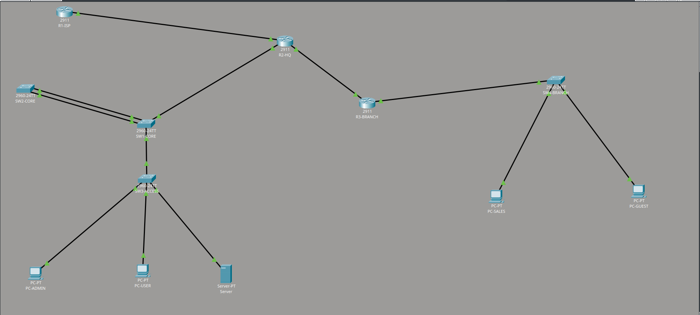

Projet 01
Infrastructure réseau multi-site
Conception et sécurisation d'une infrastructure réseau multi-site réalisée avec Cisco Packet Tracer. L'objectif était de mettre en place une architecture réseau fonctionnelle, organisée et sécurisée.
01
Topologie sur Cisco Packet Tracer

Topologie de l'infrastructure réseau réalisée sur Cisco Packet Tracer.
02
Contexte
Ce projet consiste à concevoir une infrastructure réseau permettant de connecter plusieurs sites d'une même organisation.
L'objectif était de mettre en pratique différentes notions d'administration réseau, notamment le routage, l'adressage IP, la segmentation du réseau et la sécurisation des communications.
03
Objectifs
La réalisation de cette infrastructure avait plusieurs objectifs :
- Concevoir une architecture réseau multi-site.
- Configurer les équipements réseau.
- Mettre en place le routage entre les différents réseaux.
- Organiser l'adressage IP.
- Tester la connectivité entre les différents équipements.
- Appliquer des mesures de sécurité adaptées.
04
Réalisation
L'infrastructure a été entièrement simulée avec Cisco Packet Tracer afin de pouvoir tester l'architecture avant son éventuel déploiement.
Les différents équipements ont été configurés afin d'assurer la communication entre les réseaux et les différents sites.
Configuration réseau
Une attention particulière a été portée à l'adressage IP et à la configuration des interfaces réseau des équipements.
Routage
Le routage permet aux différents réseaux de communiquer entre eux. Les routes nécessaires ont été configurées et testées dans l'environnement Cisco Packet Tracer.
Tests
Plusieurs tests de connectivité ont été réalisés afin de vérifier le bon fonctionnement de l'infrastructure.
05
Compétences
06
Bilan
Ce projet m'a permis de mettre en pratique les connaissances acquises en administration réseau et de mieux comprendre le fonctionnement d'une infrastructure composée de plusieurs réseaux.
La simulation avec Cisco Packet Tracer m'a également permis de tester différentes configurations et d'identifier les problèmes de connectivité avant leur résolution.